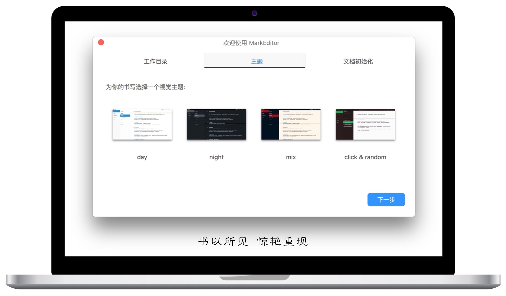
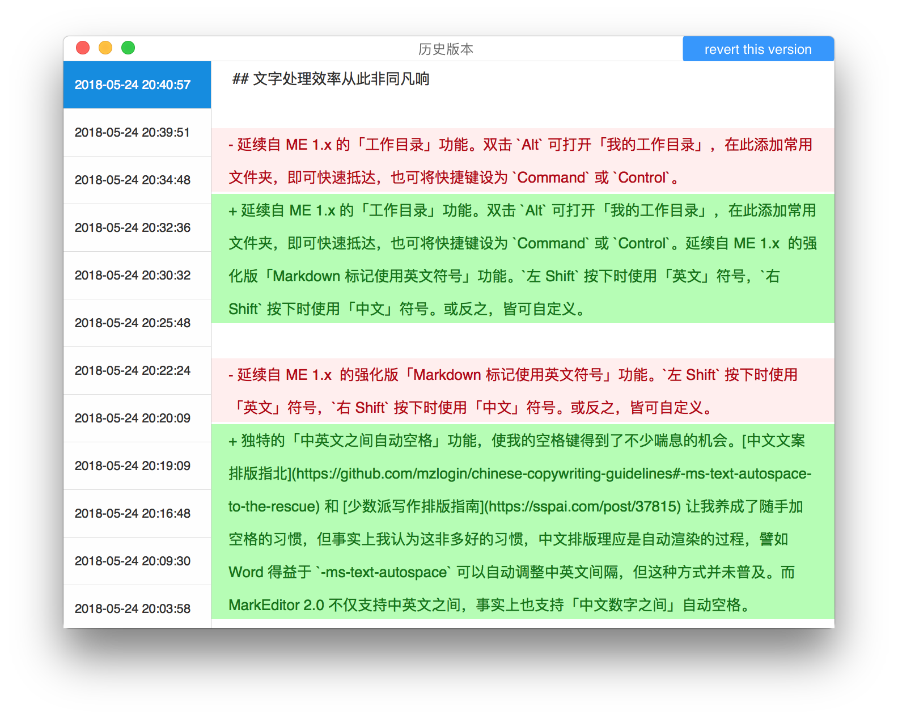
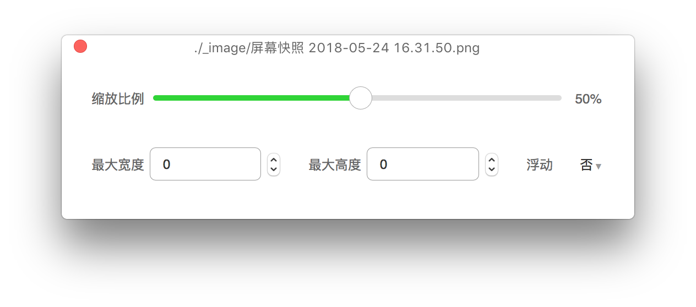
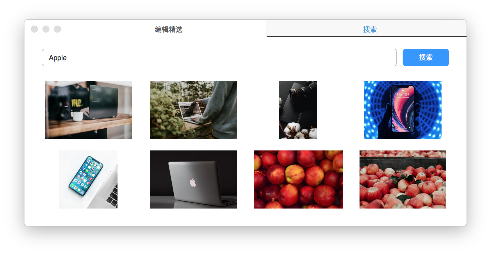
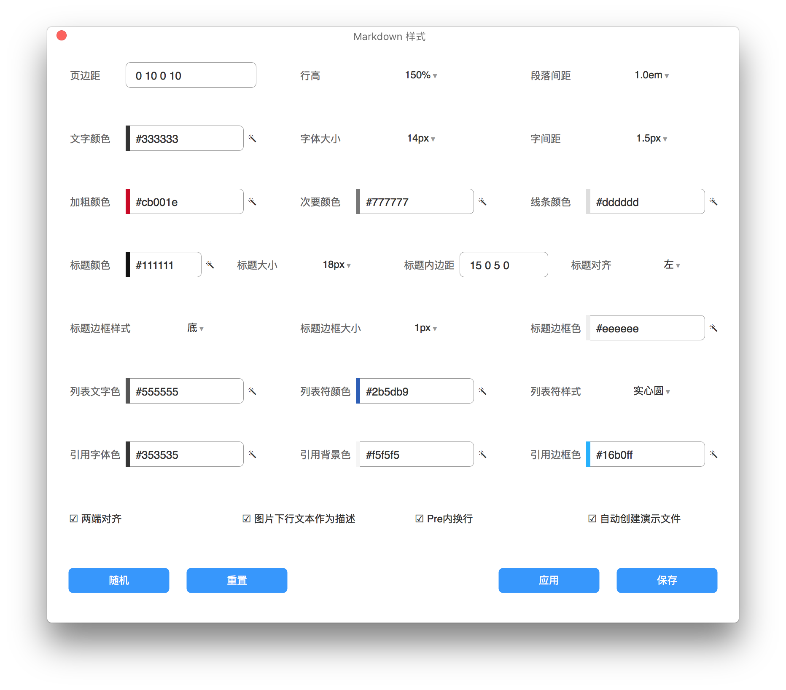

少数派精选并推荐至首页：点此查看
本文著作权归作者唐小筑所有，并授权少数派独家使用，未经少数派许可，不得转载使用。
纯粹式 Markdown 编辑器有很多，其中 Typora 是所见所得编辑器的优秀代表；令人耳目一新的多功能编辑器也不少，比如 Bear、MWeb 等，各有各的特色，而 MarkEditor 2.0 是一款很贴近 Markdown 文字编辑者且让人情不自禁喜爱的工具，它已经不仅仅是多功能 Markdown 编辑器，甚至可看作一切文字工作的处理中心。

基于本地目录的数据结构
MarkEditor 2.0 并没有数据库，一切都只以本地目录的数据结构存储。这点与 Bear、MWeb 等不同，譬如 MWeb 为了实现博客功能设置内部文档库模式，而 MarkEditor 仅基于本地目录的数据结构来实现一切功能，这为跨平台提供了最大的便利。不可否认，舍弃构建特别的数据库使 ME 失去一些可能，但将数据完全交给用户的设计也带来了数据便于管理、整理、同步的优势，这种设计从 FarBox Editor 到 MarkEditor 1.x 再到 2.0 一直如此，而且 MarkEditor 2.0 的想象空间不逊色于任何类似工具。
文字处理效率从此非同凡响
Markdown 语法在 MarkEditor 中有特别的优化，比如样式修饰语法（居中、色彩、字体大小等），在当前行或段的末尾添加 [center red @blue] 则当前行或段会居中、字体变红色、背景变蓝色，ME 也支持 [TOC]、[PAGE] 等语法，具体参见帮助文档。
MarkEditor 2.0 支持多标签，且支持 Command + 数字 切换标签页，这是许多编辑器缺失的功能。此外，亦有延续自 MarkEditor 1.x 的「工作目录」功能，双击 Alt 可打开「我的工作目录」，在此添加常用文件夹，即可快速抵达，也可将快捷键设为 Command 或 Control。
延续自 MarkEditor 1.x 的强化版「Markdown 标记使用英文符号」功能，使 MD 编辑工作难以想象的轻松，左 Shift 按下时使用「英文」符号，右 Shift 按下时使用「中文」符号。或反之，皆可自定义。
而独特的「中英文之间自动空格」功能，使我的空格键得到了不少喘息的机会。中文文案排版指北 和 少数派写作排版指南 让我养成了随手加空格的习惯，但事实上我认为这并非多好的习惯，中文排版理应是自动渲染的过程，譬如 Word 得益于 -ms-text-autospace 可以自动调整中英文间隔，但这种方式并未普及。而 MarkEditor 2.0 不仅支持中英文之间，事实上也支持「中文数字之间」自动空格。
为了更有效地追溯过去版本，MarkEditor 2.0 支持 Git 式「历史版本」系统，并且没有对最大历史版本设限，达到每一次书写皆有记录。

MarkEditor 2.0 也有其他别具一格的功能：
- 选中文字导出为图片。简单图文、微信题图、代码高亮、配色方案、带壳截图，五大选项让你导出花式图片，满足花样需求，譬如文中带壳图片均由此功能导出；；
- 文档链接。从目录拖入其他文档，即可在本文档中创建可跳转的文档链接；
- 词性标注功能。可标注出文中英文或中文名词、动词、形容词等，也许有助于文章的修饰；
- 居中保持模式。使「正在编辑的位置」位于中央区域，快捷键为
Shfit + Command + M； - 将链接或内容以二维码的形式插入；
- 首行缩进，让中文在 Markdown 中出彩；
- 等等。
图片处理从未如此赏心悦目
MarkEditor 2.0 支持将文档资源上传到 Bitcron、AWS S3、七牛，图片可一键上传至图床。此外，ME 2.0 也许是唯一具备「图片可视化管理」功能的 Markdown 编辑器，借助于「图片管理器」能够：
- 快速收集图片资源，并随时在文章中插图，或上传到图床后插图；
- 纵览当前目录下所有图片，亦可进行复用或删除操作。
此外，在文档内双击图片即弹出可视化窗口以调整图片大小。

值得一提的是，MarkEditor 2.0 支持从 Unsplash 搜索和插入图片，Bitcron（ME 自家博客站、网站引擎）文章封面图轻松搞定，也可作为 Zoommy 轻量替代品，满足轻量的图片需求。甚至，在同一局域网下，也可扫描二维码直接从手机端上传图片。

分享和导出从此大有不同
在同一局域网下，启动「预览于 Web 浏览器」功能，扫描二维码或输入网址即可观测文章在不同设备下的最终效果，确保分享出去的文章能达到良好的阅读效果。
可将文章上传至云端，复制其七牛、AWS S3 公开 Url 或 MarkEditor Url，并以链接的形式分享。也可以「图片的形式」分享，常规或适应移动端表示导出适应大屏和手机的「最终效果」图片，常规（text）或适应移动端（text）表示导出适应大屏和手机的文章「Markdown 结构」图片，而「通过二维码发送到微信」分享图片才是最酷的方式。
对微信公众号运营者而言，或许最热爱「复制为微信公众号格式」功能，其公众号主题样式众多，颜值颇高，且支持 Markdown 表格、由表格自动转化的折线图等图表、流程图、代码高亮、图片等，但由于公众号自身限制，外部链接、数学公式等无法较好支持。同时，搭配「选中文字导出图片 -> 微信题图」功能，一站式搞定公众号文章。

亦可以「Wiki 站点」的方式分享全目录内容，或将指定目录导出为「PDF 电子书」阅读和分享，其颜值均处于较高的水准。
MarkEditor 2.0 功能远不止于此，简洁界面的背后是强大的引擎，始于 FarBox Editor，进化自 MarkEditor 1.x，MarkEditor 2.0 臻至更高的高峰，更有 Bitcron 作为坚强的后盾…… 更多有关 ME 2.0 内容见 社区问答 ，而 视频简介 也以更好的方式传达了 ME 理念和别致的特性。
我想起了和开发者海波反馈问题或求助的邮件们，承载着我对 ME 的热爱和海波的热情，不知何故，想起海波就想起了定风波，想以此诗致海波：
莫听穿林打叶声，何妨吟啸且徐行。
竹杖芒鞋轻胜马，谁怕？一蓑烟雨任平生。
料峭春风吹酒醒，微冷，山头斜照却相迎。
回首向来萧瑟处，归去，也无风雨也无晴。
题外话：这篇文章是我成为少数派签约作者后的第一篇文章，实际上 ME 2.0 还处于活跃的更迭状态，我本想晚些时候再写，但 Oscar Liu 在 Slack 中询问意向，而 ME 2.0 也没啥影响日常使用的 Bugs，所以就写了。对了，ME 2.0 是收费应用，文中没提及，因在我看来收费是默认的，免费再去提及感觉更好一些。
我一向希望把自己知道的最好的东西传递出去，比如 ME 2.0 这个在同类产品中很有特性、也很好用的编辑器，事实上我这里还有一些好东西，但并未整理好，也受限于我的文字表达水平，迟迟难以下笔。这篇文章也并未完全传递出我想说的话。
大家可以说说阅后感，比如对 ME 2.0 由文章而生的印象，若有些行文建议最好不过，写作从来都只是我的一项业余爱好，但我越来越热爱写作，愈加想提高文章质量，如此写出的文字才不会太辜负一些好作品，和乐意阅读的朋友们！